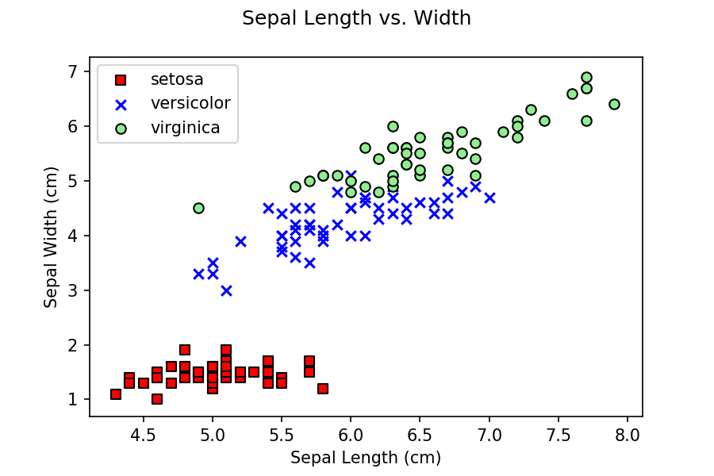

Python Tutorial
A computer program is a sequence of instructions, written in a programming language, that combine together to solve a problem or produce a desired result. Computer programs range from very simple examples with only a few lines of source code, to very complicated. For example, Windows 11 is estimated to contain around 60–100 million lines of code.
In general, programming involves the following steps:
This tutorial will provide an introduction to programming using Python, an interpreted programming language. Python was conceived in the late 1980s by Guido van Rossum at Centrum Wiskunde & Informatica (National Research Institute for Mathematics and Computer Science) in the Netherlands. Python 1.0 was released in 1994. The most recent version is 3.10.2, released in January 2022. To maintain backwards compatibility, Python versions 3.0 and 3.1 coincided with versions 2.6 and 2.7. We will be using Python version 3.9.x.
Since Python is an interpreted language, individual lines of code are converted to machine language and executed as they are encountered (versus a compiled language, which converts an entire program to machine code in an explicit compile–link stage). One advantage of an interpreted language is the ability to enter individual commands on a command line prompt, and immediately see their results.
Unless we're only issuing a few commands once or twice, we normally
store the commands in source code files. This allows us to load and
execute the commands as often as we want. It also makes it easier to
modify a program, or correct it when we discover errors. A slightly
modified version of the above code (to force output to appear when it's
run) is available in the source code
file tut-01-intro.py.
A source code file in Python is called a module. Every Python program includes a main module. When the program starts running, it begins interpreting code in the main module. You can also split your code across additional modules to organize it, or use libraries to access functionality provided by other programmers.
The assignment for the Summer 2 session asks you to use Open Weather Map's API (Application Programming Interface) to query forecasted temperature data. You will write your results to a CSV file. The assignment web page provides full details on what is required.
The assignment will be completed as individuals, and not as a homework team. Grading for the assignments will be on a standard 0–100% scale. You will submit the Python code for your completed assignment through Moodle. Look for "Python Programming: OpenWeatherMap API Assignment".
For this class, we'll be using the Anaconda Scientific with Python 3 for Windows. We will be using Anaconda's Windows Python 3.7 installer. Anaconda includes the NumPy (numerical Python), pandas (Python data analysis), scikit-learn, urllib (URL management), and BeautifulSoup libraries that we'll be using in this tutorial.
Once Anaconda is installed, I recommend running Anaconda
Navigator and choosing either Jupyter notebook
or spyder as your programming environment.
On most platforms, Python is normally installed by default. If it
is, you can run the Anaconda Prompt (Anaconda 3) and
type python at a command line prompt to bring up a Python
shell. Make sure you do this using the Anaconda Prompt and not a regular
Windows 10 command line, to ensure all the proper PATH variables to
appropriate Python packages are set.
Python is a powerful programming language that can perform many functions. For this class, our interest is in Python's data management capabilities. Python offers efficient ways to read data from one or more input files, then modify, correct, convert, or extend that data and write the results to an output file.
For example, suppose we had the following comma-separated value (CSV) file:
Name,Height
Jim,181
Betty,167
Frank,154
...
Annabelle,201
We want to classify each individual based on his or her height hi versus the mean and standard deviation of height μ and σ as:
producing a new CSV output file with contents:
Name,Height,Class
Jim,181,2
Betty,167,1
Frank,154,3
...
Annabelle,201,4
Python isn't the only way to produce this result (e.g., we could probably do it in Excel, or SAS, or R), but it's often easier and faster to do it with a Python program. If you're curious, this source code file classifies a comma-delimited height file. A corresponding (very simple) height file is also available in CSV format.
Every programming language provides a way to maintain values as a program runs. Usually, this is done by create a named variable, then assigning a value to the variable. In Python, variables are created interactively by specifying their name and assigning them an initial value.
Unlike languages like C++, Python does not require you to specify a
variable's type. This is inferred from the value it
maintains. In the above example the variables name,
birthplace, born, and deceased
are inferred to be strings, height is inferred to be
floating point, and age is inferred to be integer. One
advantage of Python's dynamically typed variables is that you
can change them to hold different types of values whenever you
want. You can also ask Python what type of value a variable contains
with the type() function.
Here is a quick list of some of Python's basic variable types. More complicated types will be discussed later in the tutorial.
True and False.
sys.maxint and -sys.maxint - 1 can
be used to query the machine's maximum and minimum integer values.
sys.float_info.max can be used to query the
machine's maximum float value.
Write a set of Python statements that assign the names and associated phone numbers: Christopher Healey, 9195138112, Michael Rappa, 9195130480, and Aric LaBarr, 9195132957 to Python variables, then prints three lines listing each person's name and corresponding phone number.
I recommend you write your program using Jupyter
notebook or spyder, save it as a Python notebook
or source code file, and then test it, rather than writing the program
directly in the Python shell. This will let you write your code, run
it to see what it does, edit it to fix problems, and run it again,
without having to re-type the entire program at the command line.
You can download the solution file and run it on your machine, if you want.
Your choice of variable names is probably different than ours, and you might have printed the name and phone number with slightly different formatting. Regardless, the basic idea is to use six separate variables to store the names and phone numbers, then print the contents of these variables in combinations that produce the correct output.
You might think, "This works, but it doesn't seem very efficient." That's true. Once you've learned more about Python, it's unlikely you'd write this code to solve the problem. Here's a more elegant and flexible solution. When you've finished the tutorial, you'll be able to understand, and to implement, this type of code.
Python provides a set of built-in functions or operators to perform simple operations such as addition, subtraction, comparison, and boolean logic. An expression is a combination of variables, constants, and operators. Every expression has a result. Operators in Python have precedence associated with them. This means expressions using operators are not evaluated strictly left to right. Results from the operators with the highest precedence are computed first. Consider the following simple Python expression:
If this were evaluated left to right, the result would be 20. However, since multiplication and division have a higher precedence than addition in Python, the result returned is 14, computed as follows.
6 + 3 *
4 / 2 + 2
6 + 12 /
2 + 2
6 + 6 + 2
12 + 2
14
Of course, we can use parentheses to force a result of 20, if that's what we wanted, with the following expression:
Below is a list of the common operators in Python, along with an explanation of what they do. The operators are group according to precedence, from highest to lowest.
| Operator | Description |
|---|---|
( ) |
parentheses define the order in which groups of operators should be evaluated |
** |
exponential |
+x, -x |
make positive, make negative |
*, /, //, % |
multiplication, division, floor division, remainder |
+, - |
addition, subtraction |
<, <=, >,
>=, !=, ==
|
less, less or equal, greater, greater or equal, not equal, equal |
and |
boolean AND |
or |
boolean OR |
In addition to boolean and numeric variables, Python provides a number of more complex types, including strings (str), lists (list), dictionaries (dict), or tuples (tuple). Using these types effectively will make you a much more efficient programmer.
String variables (str) are a sequence of one or more characters.
String values are denoted by single quotes, s = 'Abraham
Lincoln', or double quotes, s = "Abraham
Lincoln". Because strings are a more complex data type, they
support more complex operations. Here are some common operations you
can perform on strings.
len( s ), return the length (the number
of characters) in s.
s + t, concatenate s
and t, returning a new string as the result.
s[ i ], return the i-th
character in s. The first character in s
is at s[ 0 ].
s[ i: j ], slice s
and return the substring from s[ i ] up to,
but not including s[ j ].
s[ -i ], return the i-th
character from the end of s.
Here are some examples of string operations executed in a Python shell.
There are many additional operations you can perform on strings,
for example, s.capitalize() to capitalize a string, or
s.find( t ) to find the first occurrence of
substring t in s. The Python
documentation
describes
all the available string methods, explaining how to use them and
what they do.
List variables are ordered sequences of values. Most data types can
be stored in a list, for example, a list of int's, a list of str's, or
even a list of list's. List values are denoted by square
brackets, l = [ 1, 2, 3, 4 ].
You might notice that strings look suspiciously like a list of
characters. Indeed, both list and str are known as "sequence types" in
Python, so lists support the same len, concatenation,
indexing, and slicing operations as strings.
As with strings, there are many additional operations you can
perform on lists, for
example, l.insert( i, x )
and l.remove( i ) to add and remove items, or
l.sort() to reorder items into sorted order. The Python
documentation
describes
the available list methods, explaining how to use them and what
they do.
Dictionary variables are a collection of key–value pairs.
This is meant to be analogous to a real dictionary, where
the key is a word, and the associated value is the
word's definition. dict variables are designed to support efficient
searching for elements in the dictionary based on key. Dictionary
values are denoted by braces, d = { key:
value }.
By design, dictionaries have one important requirement: every value you store in a dictionary must have its own, unique key. For example, we could not store a person's address using their last name as a key, because if two different people had the same last name, only one of their addresses could be saved in the dictionary.
Suppose instead we wanted to find a person's name based on their phone number. To do this, we could create a dictionary with phone number as a key and name as a value.
The first statement creates a dictionary variable
named d and assigns a single key–value pair made up
of a string phone number key
9195138112 and a string name value Christopher
Healey. The next two lines add two new key–value pairs
to d by specifying a key as an index (an string phone
number inside the square brackets) and assigned a name as the key's
value. Printing d lists all its key–value pairs.
The value attached to a specific key can be queried by
indexing d with the target key.
Why did we choose to make our key a string variable and not a
numeric variable? The dictionary would work if we used d =
{ 9195138112: 'Christopher Healey' }, with a long
integer for the key rather than a string. Our choice was semantic:
we view a phone number as a sequence of (numeric) characters, and
not as a generic numeric value. It doesn't make sense to add or
subtract phone numbers, for example, so phone numbers don't really
act like numbers.
Since the dictionary works identically either way, does it really matter? In terms of functionality, probably not. In terms of understandability, that depends. We try to find the best match between the context of a variable and its type. Here, the point is subtle, so it doesn't make a big difference. In other cases, though, a proper choice (rather than simply the first choice that works) can improve a program's effectiveness, and perhaps more importantly, make it easier to understand.
One interesting difference between a dictionary and a list is that
dictionaries do not maintain order. The order that items are stored in
a dictionary will not necessarily match the order that you added them
to the dictionary. You can see this in the above example, where phone
numbers were added in the order
9195138112, 9195130480, 9195152858,
but they were stored in d in the
order 9195130480, 9195138112,
then 9195152858.
Dictionaries are a very powerful data structure. If you need to
perform efficient search, if ordering the element's isn't critical,
and if you can define a key for each of the elements you're storing, a
dict might be a good candidate.
There are many additional operations you can perform on dictionaries,
for example, d.keys() to return a list of keys in the
dictionary, d.values() to return a list of its values,
or d.pop( k ) to remove an entry with
key k (and return its value, if you want it). The Python
documentation
describes
the available dictionary methods, explaining how to use them and
what they do.
Tuple variables are ordered sequences of values, where the position
of a value within the tuple often has a semantic meaning. Tuple
values are denoted by parentheses, t = ( 2013, 10, 28, 14,
15, 0 ).
You might notice that tuples look identical to lists. Again, both
are "sequence types" in Python, so tuples support the
len, concatenation, and slicing operations, as well as
querying by index.
There are important differences between lists and tuples. Although they are subtle, understanding them will help you decide when to use a list, and when to use a tuple.
t[ 0 ] = 10, Python will return an error
message.
t = ( 2013, 10, 28,
14, 15, 0 ), t represents a date-time value
containing year, month, day, hour, minute, and second. So, each
position in this kind of tuple matters: year is
at t[ 0 ], month is
at t[ 1 ], and so on.
Tuples support methods that lists support, as long as the
method does not modify the tuple's values. So, for example,
tuples support len() and +, but not
remove() or sort(), since that changes the
tuple's values or the order of its values.
We've already seen that a Python program runs by executing the first statement in the main module, and continuing with each successive statement until it reaches the end of the program. This doesn't allow for very complicated programs. What if want to control the flow of execution, that is, what if we want one part of the program to be executed in some cases, but another part to be executed in different cases?
Conditional statements allow you to control how your program executes. For example, a conditional statement could apply a comparison operator to a variable, then execute different a block of statements depending on the result of the comparison. Or, it could cause a block of statements to be executed repeatedly until some condition is met.
Understanding condition statements is necessary for writing even moderately complicated programs. We discuss some common Python conditional operators below, and give details on how to structure your code within a conditional statement.
To start, we'll discuss the if-then-else conditional. Described in simple terms, this is used in a program to say, "If some condition is true, then do this, else do that."
As an example, suppose we have a variable grade that
holds a student's numeric grade on the range 0–100. We want to
define a new variable passed that's set
to True if the student's grade is 50 or higher,
or False if the grade is less than 50. The following
Python conditional will do this.
Although this statement appears simple, there are a number of important details to discuss.
grade >= 50 evaluates
to True if grade's value is 50 or greater,
and False if it isn't. The if conditional uses this
boolean result to decide which part of the conditional statement to
execute.
:) after the if statement
and the else statement.
Interestingly, the else part of the conditional is optional. The following code will produce the same result as the first example.
Suppose we wanted to not only define pass or fail, but also assign
a letter grade for the student. We could use a series of if-then
statements, one for each possible letter grade. A better way is to
use elif, which defines else-if code blocks. Now, we're
telling a program, "If some condition is true, then
do this, else if some other condition is true, then
do this, else do that." You can include as many else-if
statements as you want in an if-then-else conditional.
Another common situation is the need to execute a code block until some condition is met. This is done with a while conditional. Here, we're telling the program "While some condition is true, do this." For example, suppose we wanted to print the square roots of values on the range 1–15.
(The import math statement is needed to give us access
to mathematical functions like math.sqrt()).
Notice that the variable that's compared in the while conditional
normally must be updated in the conditional's code block. If
you don't update the conditional variable, a comparison that initially
evaluates to True will never evaluate
to False, which means the while loop will execute
forever. For example, consider the following code block.
Without the i = i + 1 statement to
update i in the conditional's code block, the while
conditional never fails, giving us the same output over and over. You
can use Ctrl+C to halt your program if it's caught in an infinite loop
like this.
A final conditional that is very common is a for loop. Here, we're
telling a program "Execute this code block for some list of
values." for can work on any list of values, but it's often applied to
a numeric range. The range command is used to create a
sequence of integers.
Giving two values to range like range( 2,
5 ) defines a starting value of 2 and an ending value of
5. range generates an integer list from the starting
value, up to but not including the ending value: [2, 3,
4]. If you only give an ending value to range
like range( 5 ), range assumes a
starting value of 0, producing the list [0, 1, 2, 3, 4].
Once a list is produced with range, each value in the
list is given to the for conditional's code block, in order. For
example, suppose we wanted to print the same set of square roots from
1–15 using a for loop.
The for statement defines a variable to hold the "current" list
value. In our case, this variable is
called i. range( 1, 16 ) generates
the list [1, 2, 3, 4, 5, 6, 7, 8, 9, 10, 11, 12, 13, 14,
15]. The for conditional walks through this list and executes
the code block 15 times, first with i set to 1, then
with i set to 2, and so on up to the final value of
15. The statement inside the code block uses i to track
the current list value, printing square roots from 1 to 15.
We don't need to use range to execute a for
conditional. Any list can be used in a for loop.
break
Sometimes we need to exit a for or while loop before its
condition evaluates to False. The break
statement allows us to do this. For example, suppose we wanted to
print the elements of a list of strings, but terminate examining
the list if we see the string stop.
continue
Other times, we want to stop executing a loop's code block, and
instead return to check its condition. The continue
statement allows us to do this. For example, suppose we wanted to
print only the odd numbers from 1 to 10.
Write a set of Python statements to compute the average of the following list of numbers.
I recommend you write your program using Jupyter
notebook or spyder, save it as a Python notebook
or source code file, and then test it, rather than writing the program
directly in the Python shell. This will let you write your code, run
it to see what it does, edit it to fix problems, and run it again,
without having to re-type the entire program at the command line.
for loop
while loop
Notice that we have to convert the sum to a floating point
value (in our case, by casting it with float()) to
get the proper average of 13.75. If we had used the
statement print( float sum / len( num ) ) instead,
Python would have return an integer result of 13.
You can download the solution file and run it on your machine, if you want.
Inevitably, you'll write some Python code that either doesn't do what you expect it to do, or that generates an error message when you try to execute it. When that happens, you'll need to debug the program to locate and correct the error. Consider the following code.
If you hit Return to close the for loop, Python would respond with an error message similar to this.
So, that didn't work. The first two lines of the error message give
some details about how the error's being reported, and where the error
occurred (on line 2 of code being entered on
"<stdin>>>;", which is Python's way of saying "from
the keyboard"). The most important part of the error is the last line,
which tries to explain the problem Python encountered. This
explanation suggests that Python doesn't know how to add
(+) an int and a str.
If you look at where the error was reported (line 2 of the for
loop), it attempted to execute sum = sum + val. Python is
claiming the first variable in the add operation, sum, is
an int, but the second variable val is a
str. val is a value from the list
variable l. And, when we look at l, we see
that it contains three string values:
'10', '20', and '30'. This is
the problem that Python encountered.
There are various ways to fix this problem. One simple solution is
to put integers in the list, l = [ 10, 20, 30 ]. If you
wanted l to contain strings for some reason, you could
cast val to be an integer in the add operation.
Now, Python accepts the for loop's body because it understands how to add to int variables. The resulting sum is printed after the loop finishes.
Why are errors in computer programs called bugs? Historically, the term "bug" was used in engineering to describe mechanical malfunctions.
In 1947 computer engineers were designing the Harvard Mark II computer. An error in the machine was traced to a moth that had become trapped in one of the machine's relays. The moth was removed and taped to the engineers' log book, where they referred to it as "The first actual case of bug being found." This incident seems to have contributed to the widespread use of the term in Computer Science.
One of the main reasons we're using Python is to read and write data to and from external files. Python has an extensive set of file input/output (file IO) operations to support this. The basic structure of modifying a file often follows this simple pattern.
Here are some operations you can use to open files and read from them.
inp = open( 'input.txt', 'r', encoding='latin' ),
open the file named input.txt for reading, accessed
through variable inp.
inp.read(), read the entire file, returning it as a
single string.
inp.readline(), read the next line of the file,
returning the line as a string.
inp.readlines(), read the entire file, returning it
as a list of strings, one for each line in the file.
inp.close(), close the file.
As a file is being read, Python maintains a current position in the
file (the file pointer). This is how Python finds things like
the "next" line: it starts from its current position in the file,
reads until it sees a newline character (\r\n) or the end
of the file, then returns what it read as a string.
Maintaining a current position means that Python won't automatically "back up" for you if you want to go back and re-read some data. For example, consider the following code snippet.
The first time we read input.txt and asked how many
lines it contained, Python told us it had 180 lines. But the next time
we read the file, Python said it had 0 lines. How is that
possible?
Remember, after the first line = inp.readlines()
statement, Python reads everything in the file, returning a list with
180 strings representing the file's 180 lines. Critically, the current
position is now at the end of the file. We re-issue the
same line = input.readlines() statement,
Python starts from its current position at the end of the
file, realizes there's nothing else left to read, and returns an
empty list to tell us that. So, the length of that second list is 0,
exactly as we saw.
How could we re-read the entire file? The easiest way to do this is to close the file, then re-open it. Doing this resets the current position back to the start of the file.
seek
It's possible to change the current position in a file without
closing and re-opening it. seek( pos ) is used to set
a file's current position to pos. For example, we
could re-read input.text as follows.
The command inp.seek( 0 ) sets the
current position to 0 bytes from the start of the file
(i.e., to the start of the file). If you need to seek
from the end of the file, you can specifying a negative offset and
a second argument of 2 to seek, for
example, inp.seek( -10, 2 ) seek 10
bytes backwards from the end
of input.txt. You can also seek from the current
position by specifying an offset and a second argument of 1 to
seek, for example, inp.seek( 20,
1 ) to seek 20 bytes forwards from the current
position, or seek( -5, 1 ) to seek 5 bytes
backwards from the current position.
tell
The tell() command will return the current
position in a file. For example, to determine the size of a file,
you could do the following.
Python provides similar operations open files and write to them.
out = open( 'output.txt', 'w', encoding='latin' ),
open the file named output.txt for writing, accessed
through variable out.
out = open( 'output.txt', 'a', encoding='latin' ),
open the file named output.txt and appends any new data
you write to the end of the file.
out.write( s ), write the contents of
string s to the file.
out.close(), close the file.
Writing data is simple: put the data you want to write into a
string variable (or convert a variable's value to a string value),
then use write to write the data to an output
file.
This code snippet creates an output file output.txt
and writes four lines containing Healey, Rappa, Mostek, and 50 to the
file. Notice that if we need a newline after each value, we need to
add it explicitly by appending '\r\n' to the string as
it's being written.
Newlines are used to insert a carriage return between lines in
a file. In Windows (or DOS) a newline is actually two characters:
a return and a newline, denoted \r\n. This is unique
to Windows. On other operating systems like Mac OS or Linux, only
the newline \n is used.
Newlines also matter when you're reading data. For example,
supposed you used readlines() to read all the lines
in a file.
The return and newline are included at the end of each line
that's read. In some cases you want these "separators" removed
when the file is read and parsed. One easy way to do this is to
read the entire file using read(), then split the
result using the string operator split().
To determine which character(s) represent the end of a line,
use the os.linesep variable.
Windows:
Mac OS or Linux:
Now, we read and divide lines as follows to produce a list of lines in a file.
split() divides a string into a list of substrings
based on a delimiter, throwing away the delimiter after
each split. Splitting the file's contents on the
delimiter os.linesep gives us what we want: the
individual lines from the file without carriage returns or
newlines at the end of each line.
A file type you are likely to encounter often is a comma-separated
value (CSV) file. CSV files are text files containing a table of
values. Each line represents one row in the table, with individual
column values in the row identified by a separator
character. The separator is often a comma (,), although
it can be any character that's guaranteed not to appear in any column
value. For example, the US
Census Bureau maintains a file of estimated US city populations
from 2010–2017. We will use an earlier
file, compiled directly after the 2010 census, containing
estimated 2011 city and town populations.
We could use file and string operations to read and parse CSV
files, but Python provides a csv module to help us with
this. Modules are pre-written collections of operators, usually
designed for a specific purpose or task. To use a module, you must
first import it. To invoke one of it's operations, you
precede the operator's name with the name of the module, followed by a
period.
To read data from a CSV file, we normally perform the following steps.
open(), exactly like
any other input file.
reader to the CSV file.
next( reader ) to read and parse any header line(s)
in the CSV file.
for loop to read and parse the rows in the
CSV file. Each row is returned as a list of column values found in
the row's line.
For example, this code would read and parse the Census population file
Note that we open the file with the newline=''
argument. We will use the same argument we we open files intended for
CSV writing below. This handles running Python 3.x on Windows, where
the interpreter automatically inserts a carriage return
(\r) whenever it sees a newline (\n). This
built-in functionality means that, on Windows, when we read or write a
CSV file, the newline \r\n on the file is automatically
converted to \r\r\n, which adds an extra line break.
Particularly on writing, this causes issues, making it look like
there's a blank line between each data line when the file is imported
into programs like Excel.
The csv module helps us read and parse a CSV file, but
it doesn't tell us anything about what the rows and columns in the
file represent. We need to provide that context based on our
understanding of the file. For example, in the code above:
header = next( reader ). If we didn't
do this, it would be interpreted as a city population line.
row[ 11 ]) holds the estimated 2011
population, so this is what we print in our output.
row[ 6 ]
and row[ 7 ]) are identical, the row
represents the state's overall population. We check for this
with if row[ 6 ] == row[ 7 ], reporting the population
for these rows as state population.
It's also possible to write data out in CSV format. This is useful, since CSV files can be easily imported into programs like Excel or SAS. A very similar sequence of steps is used to write a CSV file.
open(), exactly
like any other output file.
writer to the CSV file.
writerow() to write the list's values as a
comma-separated line in the CSV file.
For example, the Census population file has a lot of columns we might not care about. Suppose we wanted to reduce the file to only include city name, state name, and 2011 population estimate. The following code would do this.
This will produce an output file pop-summary.csv with
the following data.
Write a Python program that finds the city with the largest population in pop.csv, then prints this city's name, the name of its state, and its population.
Hint. When you read data with a CSV reader, the column
values it returns are all strings. You'll want to convert the
population value from a string to an integer. To do this,
you cast the string using the int()operation.
I recommend you write your program using Jupyter
notebook or spyder, save it as a Python notebook
or source code file, and then test it, rather than writing the program
directly in the Python shell. This will let you write your code, run
it to see what it does, edit it to fix problems, and run it again,
without having to re-type the entire program at the command line.
You can download the solution file and run it on your machine, if you want.
It's possible to write a program as a single, long sequence of statements in the main module. Even for small programs, however, this isn't efficient. First, writing a program this way makes it difficult to examine and understand. Second, if you're performing common operation on different variables, you need to duplicate the code every time you perform that operation.
For example, suppose we wanted to report the average of two numeric
lists l and m. One obvious way to do it is
to write two for loops.
This has a number of problems, however. What if we had more than just two lists we wanted to average? We'd need to duplicate the for loop once for each list. What if we wanted to do something more complicated than calculating the average (e.g., what if we wanted population standard deviation instead)? The amount of code we'd need to duplicate would be much longer.
What we really want to do is to have some sort
of avg() operation that we can call whenever we want to
calculate the average of a numeric list.
In Python we can define a function to create new
operations like avg(). A function is defined using the
keyword def, followed by the function's name, followed by
an argument list in parentheses, and then a colon. The function's code
block defines what the function does when it's called.
Functions can take zero or more arguments. A function with no
arguments still needs open and close parentheses, def
func():. A function with multiple arguments separates then with
commas, def func( a, b ):.
Once a function is defined, it can be used anywhere, including in
other functions. Suppose we now wanted to write a
function stdev() to compute the population standard
deviation of a numeric list. We can use our avg()
function to help to do this.
What if we wanted to allow a user to decide whether to calculate
population standard deviation or sample standard deviation? We could
write two separate functions to do this, but an easier way is to add
an argument to the stdev() function to specify which
standard deviation to calculate.
Now, stdev() takes a second
argument pop. If pop is True,
we return population standard deviation. Otherwise, we return sample
standard deviation. Notice that in the function header we
defined pop = True. This specifies a default
value for pop. If the user doesn't specify a second
argument, we return population standard deviation by default.
It's even possible for functions to call themselves. This is known as recursion. Consider the Fibonacci sequence:
Since Fibonacci numbers for n ≥ 2 are defined based on lower-order versions of themselves, they are a common candidate to demonstrate a recursive function.
If you look at fib(), you should see intuitively that
it's very expensive to execute. If you tried to
calculate fib( 100 ), for example, you'd be
waiting a long time for it to finish. That's because each number in a
Fibonacci sequence requires two recursive calls, which themselves each
require two recursive calls, and so on.
Although the origins of Fibonacci numbers are credited to Indian mathematics, the number series is named after Leonardo of Pisa, also known as Fibonacci. In 1202 Fibonacci posed a question about an idealized rabbit population.
Fibonacci wondered, "How many pairs of rabbits would you have after n months passed?"
As you can see, this forms a numeric sequence that we now call the Fibonacci number series.
If we need to compute large Fibonacci numbers, the recursive formula is too inefficient. Instead, we use Binet's Formula to calculate F(n) directly.
If you're curious, F(100) = 3.542248481792631e+20. It would take about 4 years for rabbits to outnumber humans based on Fibonacci's scenario.
NumPy (numerical Python, hereafter numpy, pronounced num-pie) is a library that provides advanced mathematical operations involving statistics and linear algebra. Our interest is mainly in numpy statistical capabilities, since this will allow us to calculate things like mean, variance, minimum, maximum, correlation, and covariance on lists of numbers.
numpy's standard data type is an array: a sequence of numbers, all of the same type. Arrays can be created in numerous ways. Common examples include:
arange() command, which is analogous
to Python's range() command.
numpy also supports multidimensional arrays. For example, a
table is a 2-dimensional (2D) array with rows and columns. A data cube
is a 3-dimensional array with rows, columns, and slices. We restrict
ourselves to 1D and 2D arrays in this tutorial. The easiest way to
define a 2D array in numpy is to provide a list of equal-length
sublists to the array() operator, one sublist for each
row in the array.
numpy provides access to elements of an array using the standard
indexing operator [ ]. Negative indices and slicing
can be used, similar to Python lists. It's also possible to ask for
the shape of an array using shape(), which
returns the number of rows for a 1D array, or a tuple with the number
of rows and columns for a 2D array. It's even possible
to reshape an array using reshape(), rearranging
the array's values into a new (row, column) configuration.
As mentioned above, one of the main advantages of using numpy is access to a number of statistical operations. A few common examples are listed below. A full list of numpy's statistical operators is available online.
numpy.mean( arr ), the arithmetic mean of an
array's values.
numpy.median( arr ), the median of an array's
values.
numpy.var( arr ), the variance of an array's
values.
numpy.std( arr ), the population standard deviation
of an array's values.
numpy.amax( arr ), the maximum value in an array.
numpy.amin( arr ), the minimum value in an array.
numpy.histogram( arr, b ), build a histogram of the
array's values with b bins; numpy returns a two-valued
tuple: the first value an array of the number of values in each bin,
the second contains an array of the boundary values that separate
the bins.
(Another use for numpy is to perform linear algebra operations. Although less common in the analytics program, numpy's ability to compute eigenvectors, invert matrices, or solve systems of equations is very powerful.)
The pandas (Python Data Analysis) library builds on numpy, offering an extended set of data manipulation and analysis tools. pandas is built on a few basic data types (or data structures, as they're called in pandas), together with operations on data stored using these types.
One of pandas's fundamental data types is
a
Series, a 1D labelled array. You can think of this as
a numpy array with an explicit label attached to each data value. The
collection of labels is called the data's index.
A Series can be created in numerous ways: from Python lists, from a numpy array, or even from a Python dictionary.
Data in a Series can be queried using numeric indices and slicing, just like with Python lists and numpy arrays. It can also be accessed using index labels, similar to a Python dictionary.
More importantly, we can index by applying a conditional operation
to every data element in a Series. This returns a new boolean Series
with the result of applying the conditional (True
or False) at each element position. The boolean Series is
then used to select only those data elements that passed the
conditional. For example, suppose we wanted to select the elements in
a Series whose values were greater than 2, but less than 5.
This is how pandas interprets these commands.
s with values [ 1, 2, 3, 4,
5 ] is created.
( s 2 ) creates a boolean Series
with True at locations where s is greater
than 2, and False otherwise: [ False, False,
True, True, True ]
( s < 5 ) creates a boolean Series
with True at locations where s is less
than 5, and False otherwise: [ True, True,
True, True, False ]
& (boolean and) operator combines the two
boolean Series, returning True if the values in both
Series are True, and False otherwise:
[ False, False, True, True, False ]
s
returns the data elements in s whose corresponding
index is True, that is, the third and fourth entries
[ 3, 4 ]. This represents all the entries in
s with a value greater than 2, but less than 5.
Because pandas data have labels, we can perform operations that use data alignment. pandas will look at the variables involved in an operation, and automatically "match up" data elements with common labels.
When we apply s + t, pandas sees data with
labels a and b in both variables, so it
knows to add those entries together. If data with a common label is
missing from any of the Series, the result is undefined, and set to
NaN (not a number).
A DataFrame is the second fundamental data type in
pandas.
A
DataFrame is a 2D table whose columns and rows are both
labelled. You can think of a DataFrame as a table of Series arrays,
one for each column in the DataFrame. Row labels are still referred to
as the index, and column labels are simply called the
columns.
Indexing is more complicated with DataFrames, since there are two separate dimensions: the columns and the rows. The following operators are used to index a DataFrame variable.
[ c ], return all the values in the column
named c.
loc[ r ], return all the values in the row
named r.
loc[ r, c ], return the value in the row
named r and the column named c.
iloc[ i ], return all the values in the
DataFrame's i-ith row.
It's possible to use slicing to return multiple rows (and/or columns), rather than a single result. This must be done in a particular way to properly handle and differentiate between rows and columns, however, making it more complex than slicing lists or arrays.
df[ r0: r1 ], return all the values
in rows r0
to r1 inclusive.
Note 1. When you index with [ r0:
r1 ] it returns rows, not columns like it
does when you only provide a single index.
Note 2. Slicing a DataFrame includes all rows
from r0 up to and
including r1. This is different from slicing on
a list or an array, which would exclude r1 from the
result.
df.loc[ r0: r1 ], return all the
values in rows r0 to r1 inclusive.
df.loc[ r0: r1, c0: c1 ], return the
values in rows r0 to r1 inclusive, and
columns c0 to c1 inclusive within
those rows.
df.loc[ :, c0: c1 ], return all the
values in columns c0 to c1 inclusive
([ : ] is the null slice, and
means "select everything on this dimension").
You can insert and delete rows and columns from a DataFrame, or change values at specific index positions, using the same indexing operations.
To better exemplify the power of pandas, recall the previous problem of identifying the city with the maximum estimated 2011 population from a Census Bureau CSV file. Using pandas, we could identify the city with the largest population using only a few lines of code.
This is how pandas interprets these commands.
read_csv() reads the population CSV file,
storing it in a DataFrame called pop. The header
line in the CSV file is used to assign labels to each
column. Default row indices 0–81745 are assigned to each
row.
describe() reports descriptive statistics on a
DataFrame. The values are returned as a DataFrame, if you want
to store or index them.
idx that contains True for rows
that do not contain state populations, False
otherwise.
idx is used to select city population rows,
stored in a new DataFrame city_pop.
city_pop[ 'POPESTIMATE2011' ] selects
the column with estimated 2011 population
values. Applying idxmax() to this column returns
the label of the row with the maximum value, that is, the row
with the largest estimated 2011 city population.
idxmax() is used to index the
original pop DataFrame, identifying the largest
city's name, state, and population.
scikit-learn (sklearn) is an open-source
Python library that is used extensively for analytic tasks. Built as
a Google Summer of Code project by David Cournapeau,
the term scikit derives from the notion that the package
provides a toolkit for scipy, a scientific Python library
similar to numpy.
Originally, sklearn was designed for machine learning
(ML), and retains an extensive list of algorithms to implement
numerous ML techniques. More recently, sklearn has
extended to include dimension reduction, model parameter comparison
and validation, and preprocessing such as text analytics, data
standardization, non-linear transformations, categorical encoding, and
imputation. The combination of base Python and sklearn
are often used as an all-purpose preprocessor and derivation engine,
transforming raw input into a format designed for more sophisticated
follow-on analytics.
sklearn is built on top of numpy, so it
uses numpy's Array as its basic sequence data
structure. This also means that it integrates well
with pandas, which is also built on top
of numpy.
Classification is a supervised learning approach that analyzes samples with known classes. It uses one subset of the samples to train a model, and a second subset to test the model's predictive accuracy. The model uses predictor variables to estimate the target class. The model can then be used to suggest a class for unclassified samples.
There is often confusion about the differences between classification and clustering. The following table identifies some of the characteristics that separate these two approaches.
| Criteria | Classification | Clustering |
|---|---|---|
| Supervised | Yes | No |
| Use Case | Classify new samples into estimated classes | Suggest groups of samples based on similar data patterns |
| Algorithms | Linear regression, ridge regression, lasso, elastic net, OMP, Bayesian regression, logistic regression, SGD, perceptron, LDA, QDA, kernel ridge regression, SVM, SVC, nearest neighbours, Gaussian process regression, naive Bayes, decision trees, random forest, XGBoost | k-means, affinity propagation, mean-shift, spectral, Ward, agglomerative, DBSCAN, Gaussian mixture, Birch |
| Required Data | Labelled samples from a set of classes | Unlabelled samples |
As an example of classification, we will use the Iris dataset,
which is available in sklearn's datasets
module. Recall
that Fisher's Iris dataset contains petal and sepal
lengths and widths for 50 samples of 3 classes of irises: Iris setosa,
Iris virginica, and Iris versicolor. This represents an excellent
example dataset, since it has already been pre-classified into one of
the three iris types.
To begin, we import numpy and sklearn,
load the Iris dataset, and explore it by printing its features
(predictor variables) and target classes. We then create the predictor
matrix using all samples' petal lengths and widths, as well as the
corresponding target iris types.
If you prefer, you can download a Jupyter notebook with the classification
code from here.
Notice that at the end of the code block we set the predictor
matrix X to include all petal lengths and widths, and the
target vector y to include the corresponding iris types
for each predictor sample. You might wonder, why are we only using
petal length and width, and not any sepal values? If you do some
initial exploration of the data by building scatterplots of petal
length versus width and sepal length versus width, you can see that
petal data does a better job of separating the three classes, versus
sepal data.
|
% # Plot petal data to inspect how samples cluster
%
% import numpy as np
% from sklearn import datasets
% from matplotlib.colors import ListedColormap
% import matplotlib.pyplot as plt
%
% # Use petal length and width as predictor variables
% iris = datasets.load_iris()
% X = iris.data[ :, [ 2, 3 ] ]
% y = iris.target
%
% markers = ( 's', 'x', 'o' )
% colors = ( 'red', 'blue', 'lightgreen' )
% cmap = ListedColormap( colors[ :len( np.unique( y ) ) ] )
%
% fig = plt.figure()
% for i, col in enumerate( np.unique( y ) ):
% plt.scatter(\
% x=X[ y==col, 0 ], y=X[ y==col, 1 ],\
% c=[cmap( i )], marker=markers[ i ],\
% edgecolor='black', label=col )
% plt.xlabel( 'Petal Length (cm)' )
% plt.ylabel( 'Petal Width (cm)' )
% plt.legend( ['setosa', 'versicolor', 'virginica' ] )
% fig.suptitle( 'Petal Length vs. Width' )
|
% # Plot sepal data to inspect how samples cluster
%
% import numpy as np
% from sklearn import datasets
% from matplotlib.colors import ListedColormap
% import matplotlib.pyplot as plt
%
% # Use sepal length and width as predictor variables
% iris = datasets.load_iris()
% X = iris.data[ :, [ 0, 2 ] ]
% y = iris.target
%
% markers = ( 's', 'x', 'o' )
% colors = ( 'red', 'blue', 'lightgreen' )
% cmap = ListedColormap( colors[ :len( np.unique( y ) ) ] )
%
% fig = plt.figure()
% for i, col in enumerate( np.unique( y ) ):
% plt.scatter(\
% x=X[ y==col, 0 ], y=X[ y==col, 1 ],\
% c=[cmap( i )], marker=markers[ i ],\
% edgecolor='black', label=col )
% plt.xlabel( 'Sepal Length (cm)' )
% plt.ylabel( 'Sepal Width (cm)' )
% plt.legend( ['setosa', 'versicolor', 'virginica' ] )
% fig.suptitle( 'Sepal Length vs. Width' )
|
|
|

|
Once the predictor and target X and y are
set, we need to split them into a test subset and a
training subset. We will build our predictive model using the
training data, then test its accuracy using the test
data. sklearn provides built-in support to divide a
labelled dataset using its test_train_split() function.
test_size defines the relative size of the test
dataset to the training dataset, in this example, 70% for training,
30% for test. By default, test_train_split randomly
assigns samples to the training and test
datasets. The stratify parameter
forces test_train_split to produce training and test sets
with a proportion of target classes y in each set
equivalent to the original target dataset. That is, the class
proportions in each set are equivalent to the relative frequency of
each class in the original target dataset.
Next, we want
to standardize our predictive variables in the
training and test datasets, to try to fit the assumptions of many
modelling algorithms of a mean of zero and equal variance for each
variable. sklearn's
StandardScaler can be used to achieve this, assuming
the underlying predictor variable distribution is bell-shaped. Centering
and scaling happen on a per-variable basis, with mean and standard deviation
saved within the StandardScaler variable for later use
during variable transformation.
Note that, if your distribution is skewed, per Dr. Race's
preprocessing instructions, you would not want to use a (μ=0,
σ=1) standardization. Instead, you can use
the MinMaxScaler to scale each feature based on its
min–max range.
At this point, the data has been preprocessed into a state that is
ready for building classification models. sklearn
supports many different modeling algorithms. We will explore four of
these: Perceptron (neural net), SVC (support
vector classification), KNN (k nearest
neighbours), and random forest, an ensemble decision tree
approach.
One of the useful advantages of using sklearn
exclusively is that classification follows a fairly standard set of
steps, regardless of the specific algorithm being used. We will look
at Perceptron in some detail, then provide examples for
the other three methods, with discussion limited to the specific
differences (if any) for each.
The Perceptron classifier is sometimes described as a
simple feed-forward single-layer neural net. In visual terms,
consider a perceptron approach as one that attempts to choose linear
boundaries that separate classes from one another, to the extent that
this is possible. Technically, the perceptron method uses an input
vector of attribute values and a weight vector of similar
length (together with a bias) to compute a value for the
input. Based on that value, one of the available classes is
suggested. If the suggestion is incorrect, the weight vector is
updated. This continues until some type of convergence is
achieved.
In sklearn, the Perceptron algorithm
falls within the linear_model group. The following code
builds a perceptron prediction model for our Iris dataset example.
As you can see, the code to build a prediction model is simple once
the proper datasets have been defined and prepared. We build a
Perceptron prediction model, fit it to the training data,
and predict target classes with the predict() function.
The Perceptron model constructor supports numerous options, including:
max_iter, the maximum number of passes
(epochs) over the training data to attempt to achieve convergence,
default=5;eta0, a constant by which updates are
multiplied, default=1; andrandom_state, the seed for the random number
generator to use when shuffling data, a different seed will produce a
different sequence of random numbers.
Next, we use ppn's score() function to
report overall classification accuracy on both the training target
dataset y_train and the test target
dataset y_test (90% and 89% respectively in our
example).
If we instead wanted to use an SVC classifier, only
minor modifications would be needed to the perceptron code.
As you can see, building and evaluating the model is nearly identical to the perceptron example. Next, let's look at k nearest neighbours.
Finally, here is code to run a random forest classifier on the iris data.
As we discussed above, each approach subdivides 2D space (in our
case, since we have two predictor variables) into regions representing
the three different iris types. Below are images, along with the
dataset samples, showing the class regions for each of the four
example algorithms. Samples outlined in black represent the test
data y, while the remaining samples represent the
training data X.
|
|
|
|
|
|
Clustering attempts to divide a set of samples into clusters based on data properties or patterns identified within the samples. Clustering is unsupervised; no pre-labeled data is required to generate clusters.
During our examination of sklearn's clustering
algorithms, we will continue to use the Iris dataset.
X represents 150 samples defined by petal length and
width, and y represents the class (iris type) for each
corresponding sample. Since clustering is unsupervised, we will only
use y to calculate accuracies. It will not be needed
during the clustering process itself.
We will provide examples for three common clustering algorithms:
k-means, agglomerative, and DBSCAN. Similar to
classification, a common pattern is used by sklearn,
regardless of which clustering algorithm is applied. We will
study k-means, as well as some of its strengths and
limitations, in some depth. Agglomerative clustering and DBSCAN will
be presented, but with a focus on their differences in implementation,
requirements, and the type of data they are designed to analyze.
If you prefer, you can download a Jupyter notebook with the clustering
code from here.
Accuracy. One issue to consider is how to measure
accuracy. The idea of determining how well an algorithm splits the
Iris dataset into three groups corresponds to how well cluster IDs are
attached to elements in the target y. In a perfect
scenario, elements with target
value yi would have identical cluster
IDs cj (remember, in general
yi ≠ cj). We can assume the
most frequent cj is the cluster ID assigned
to elements in class yi. Any other cluster IDs
can be considered errors.
The following misclassify() function takes target
classes tg and corresponding cluster
IDs pred, returning a total misclassification count and a
list of misclassifications per target class as a list. Although we
will not explain the function in detail, its comments should help
interested readers understand how we are attempting to determine
overall cluster accuracy.
k-means clustering divides a dataset into k
clusters. Theoretically, the goal of k-means is to partition
a set of n samples X = (x1,
x2, ..., xn)
into k subsets
S = {s1, s2, ...,
sk} such that within-cluster sum of squares
(WCSS or variance) is minimized,
where μi is the mean of the samples in Si.
The basic approach for performing k-means (often known as Lloyd's algorithm) uses the following set of steps:
The obvious problem with k-means is how to choose k, the "correct" number of clusters to generate. In our example, we know there are three classes of irises, so we will ask for k=3 clusters. If the proper number of clusters is unknown, the elbow method is often used: start at k=2, compute the sum of squared errors (SSE) between each point and its centroid, move to k=3, and continue until we find a minimum SSE. The k that produces this is selected at the "optimal" number of clusters. Notice that this choice is based completely on mathematical considerations, and may not necessarily match the semantics of the data being clustered, particularly since neither WCSS nor SSE consider data context.
Remember that, because the initial centroids are randomly chosen,
k-means results are stochastic (not stable). Rerunning the
algorithm with a different random_state seed value can
produce different results, misassigned sample counts, and
accuracies.
Another common clustering approach is agglomerative clustering,
which builds a hierarchical, bottom-up collection of clusters. Here,
we repeatedly take the two most similar elements and combine them into
a cluster until X forms a single cluster. What we mean by
"most similar" is critical to how the clusters will form, and is based
on a linkage strategy and a distance metric (e.g.,
Euclidean, Manhattan, Hamming, cosine, and so on). In all cases, we
assume a single element forms a 1-element cluster. Linkage strategies
include:
sklearn
supports ward, complete,
and average when the agglomerative clustering object is
created, with a default of Ward.
The sequence of combinations performed produces
a dendrogram, a tree with the root at the top (a single
cluster containing X), and each split generating two
children as we walk down the dendrogram. To choose k
clusters, we simply pick the k clusters that are closest to
the root cluster.
Agglomerative clustering is implemented in a nearly identical
manner to k-means. The one difference is that you can fit a
model, or fit and return
predictions. The AgglomerativeClustering module does not
provide a separate predict() function.
Our final example uses DBSCAN (Density-BaSed Clustering of Applications with Noise). DBSCAN is a spatial algorithm that clusters points that are "closely packed" to one another. Specifically, basic DBSCAN uses the following definitions to build its clusters.
Given these definitions, core point p forms a cluster with all points (core or non-core) that can reach p. Every cluster contains at least one core point. Non-core points form the cluster's edge, since they cannot be used to reach additional points.
Implementation of DBSCAN is identical to
AgglomerativeClustering, except we do not specify a
number of clusters. This is determined automatically by DBSCAN's
ε and min values (eps
and min_samples arguments during the creation of a DBSCAN
object, with defaults of 0.5 and 5, respectively.)
Notice that DBSCAN produces a much larger misassignment error than either k-means or agglomerative clustering. Examining the cluster plot makes the issue clear: DBSCAN merged iris classes 2 and 3 together, producing one class that was perfectly clustered, and one that was entirely misassigned. This points to a common issue with DBSCAN in particular, and spatial clustering algorithms in general: when semantically different groups of elements overlap, they are often merged, since DBSCAN has no notion of what each element represents, only distances, cluster sizes, and how they compare to ε and min.
Imputation of values in a dataset is another function provided
by sklearn. It is common to receive raw data files with
missing values, errors, or other types of incorrect values.
Imputation allows you to replace these values through techniques like
estimation, replacement with constants, or replacement with
statistically derived results on the values that are available.
If you prefer, you can download a Jupyter notebook with the imputation
code from here.
sklearn provides an SimpleImputer that,
in its default form, implements three basic strategies for imputing
missing values: (1) use the column's mean; (2) use the column's
median; or (3) use the column's most frequent
value. The axis argument can modify
this: axis=0 for columns, axis=1 for rows
(default is axis=0.) These approaches are reasonable,
although not particularly sophisticated.
Rather than identifying missing values, you may want to apply a
custom transformer to "derive" new values based on existing values
in your dataset. sklearn allows this through its
FunctionTransformer object. To use it, we build a
FunctionTransformer with a specific function attached to
it. We can then use that function to transform all values in a
numpy Array, just like any built-in
sklearn transformer.
pandas also provides a number of functions
specifically designed to handle NaN and perform different types of
correction or imputation. For example, pandas's
isnull() function returns True for NaN
entries, and False otherwise. We can take advantage of
the face that True evaluates to 1 and False
evaluates to 0 to count the number of NaNs in a data frame. The
following examples will use a U.S.
Census construction CSV file to demonstrate pandas's
capabilities. We will work with the EMP column, which is
a Census definition for number of employees.
One common use of isnull is to identify and remove
columns from a data frame that are entirely NaN. This is important,
because these types of columns can interfere with
normal pandas analytic operations.
Notice that in all the following examples, we make a copy of the
data frame with the copy command. This ensures that we
do not change any of the values in the original data frame. You
cannot copy a data frame with df_cp = df. If you do this,
df_cp will simply reference df.
Referencing means the variables df and df_cp
with both point to the same data frame, so any changes through either
will affect the original data. The copy() function ensures
an entirely new data frame is created, containing values identical to
the original data frame.
It's not necessary that columns be entirely NaN to be removed. It
would be easy, for example, to remove any column whose percentage of
NaN was over some reasonable threshold, for example, 60%, with
if nan_n > 0.6 * row_n:.
In terms of replacing NaNs, pandas can fill them with
a constant value with ffill(), moving the most recent
non-NaN value forward, or bfill(), moving the next non-NaN
value backwards.
Finally, if we integrate into scipy, the scientific
Python toolkit sklearn extends, we can gain access to a
larger number of interpolation methods. For example, rather than
performing a linear interpolation of missing values, we can use a
cubic spline or a second or third-degree polynomial to produce a
"smooth" interpolation of both available and missing values.
|
|
|
interp1d supports numerous additional
interpolation methods
like polynomials, splines,
and nearest, previous,
and next, which produce stair-step interpolation plots. It
is also possible to interpolate multivariate data superimposed on a
uniform grid using
scipy's griddata() function.
The ability read and parse web page content is often very useful, since data is commonly available on a web page, but in a format that's not convenient to simply copy and paste.
Two Python libraries are used to simplify web scraping: urllib and BeautifulSoup 4. urllib supports posting HTTP requests to a web server. In our case, this is normally a request for HTML content of a target web page. BeautifulSoup parses HTML into a parse tree, then provides operations that allow you to find specific information within the tree, for example, all the HTML links, or text attached to an HTML ID in the document.
These are the steps you would follow to read and parse a web page.
urllib.request.urlopen()
and urllib.request.read().
BeautifulSoup() into
a parse tree.
This code will read the HTML for this tutorial, then return all the HTML links in the document.
One you have a parse tree, most of your work will involve navigating the tree to find the things you're looking for. BeautifulSoup provides numerous operations to search within the tree. This can be done by HTML tag, by ID, by string value, and so on. This requires work on your part, however.
<li> list item
elements, <a href> link reference elements,
elements with a specific <id>
or <class> value, and so on).
For example, suppose you parsed this HTML page using BeautifulSoup
into a variable called tree. You could search for
the div with a specific id and the value
within that div as follows.
Another common task is finding specific text within a web page.
For example, we might want to find all the paragraph (<p>
... </p>) blocks that contain the string Python.
The obvious way to do this might be as follows.
Notice the result is an empty list, even though we know that the
string Python occurs multiple times within this
document. The problem is that the command above asks for a paragraph
block that contains EXACTLY the string Python, not a
paragraph block that contains at least one occurrence of the string
Python. To correct this, we pass the string as a
regular expression. There is insufficient space to delve into
the details of regular expressions (REs), but suffice it to say that
REs allow us to specify text with wildcards, options on parts of text
that occur in the string we're specifying, whether a string has to
start at the beginning or end of a line, the number of times a string
has to occur, and many other conditions. REs are extremely powerful,
and also fairly difficult to master. Moreover, although all programming
languages include support for REs, they often specify REs in slightly
different ways, making it difficult to port anything but the most simple
REs between languages.
Regardless of these issues, in our case it is very simple to
convert the from looking for a paragraph block with
exactly Python to a paragraph block
containing Python by simple asking the regular expression
module re to convert the explicit string into a RE that
represents "an occurrence of this string."
Now, all paragraph blocks containing the term Python
are returned as elements of a list of results.
Understanding the structure of a web page can't be done for you. It's something you'll need to complete as a first step for extracting data from the web page. Perhaps more importantly, if a web page doesn't have any useful structure, then it might be difficult (or impossible) to isolate the data you're interested in. Usually, however, web pages are built with a logical design. In these cases, web scraping can save you significant time and effort over manually copying or re-typing individual data values.
For practice, here are five Practical Python practice problems. A short description of the problem is provided, with one possible solution presented. I strongly recommend that you attempt your own solution first, before looking at the one we provide.
Create a program to play the game "cows and bulls." This is how the game works.
For example, if the target was 7934 and the user
guessed 7274, they would receive two cows for the
first 7 and the 4, and two bulls.
A basic pseudocode outline for how you might want to structure your program design could be something like this.
Here is one solution to the Cows and Bulls game. If you're practising, you should program your own solution before looking at ours.
Create a program to assign a random number of birthdays to each month, based on a maximum number of birthdays defined by the user.
pyplot.
Plot the number of birthdays in a bar chart
using pyplot. You can Google search for simple
instructions on how to import and use pyplot to plot a
bar graph (e.g., from somewhere
like here).
Morse code, also known as American or Railroad Morse code, was developed by Samuel F. B. Morse in the United States during the 1830s to represent letters of the alphabet, numerals, and punctuation for electric telegraphy using an arrangement of dots and dashes. The original Morse code was further improved by Alfred Lewis Vail, Morse's assistant and partner. Later use of Morse code in Europe identified that it was insufficient to support non-English text like diacritical marks. This led to the development of International Morse Code, or Continental Morse Code as it is now known, in 1951.
The most famous Morse code sequence is probably the one for SOS (Save Our Souls), denoted dot-dot-dot, dash-dash-dash, dot-dot-dot. This is because dot-dot-dot represents S, and dash-dash-dash represents O in Morse code.
Create a program to decode a message into Morse code. Morse code uses a sequence of dots and dashes to encode letters, numbers, and the space character. The table below shows the conversion from American Morse code to individual characters. A single space separates the dot–dash pattern for each character. Three spaces represent a space character. You can use period for dot and hyphen for dash in your program.
| Code | Character | Code | Character | Code | Character | Code | Character |
|---|---|---|---|---|---|---|---|
| · – | A | – · · · | B | – · – · | C | – · · | D |
| · | E | · · – · | F | – – · | G | · · · · | H |
| · · | I | · – – – | J | – · – | K | · – · · | L |
| – – | M | – · | N | – – – | O | · – – · | P |
| – – · – | Q | · – · | R | · · · | S | – | T |
| · · – | U | · · · – | V | · – – | W | – · · – | X |
| – · – – | Y | – – · · | Z | · – – – – | 1 | · · – – – | 2 |
| · · · – – | 3 | · · · · – | 4 | · · · · · | 5 | – · · · · | 6 |
| – – · · · | 7 | – – – · · | 8 | – – – – · | 9 | – – – – – | 0 |
A basic pseudocode outline for how you might want to structure your program design could be something like this.
Here is one solution to the Morse code program. If you're practising, you should program your own solution before looking at ours.
Create a program to play the game "hangman." Here are instructions on how the game works.
Here is a JSON file with a few thousand words you can use to select from for the word to guess. You can read the contents of this file into a list using the following code.
The basic game-play would follow a pattern something similar to this.
Here is one solution to the Hangman game. If you're practising, you should program your own solution before looking at ours.
Friday the 13th is considered an unlucky day in many countries, but not all. There is no definitive answer as to why this day is considered unlucky, but a common belief is that it originates from Judas Iscariot being the 13th guest to arrive at the last supper. Another explanation is that in Norse lore, 12 gods came together at Valhalla and Loki, the mischievous god, arrived unannounced as the 13th guest.
Regardless of its origin, in this problem you are asked to find all
occurrences of Friday when it is the 13th day of the month, for a
given year chosen by a user. This will allow you to practice using the
datetime
data structure in Python. datetime is specifically
designed to allow date and time manipulation in a simple manner. For
example, with a datetime variable, you can easily perform
the following (often more complicated) tasks.
datetime variable with the strptime()
function,
datetime variable to a string in any format
you need with the strftime()
function,datetime variable by looking at its
year, month, day, hour,
minute, and second components, and by using the
weekday() function,datetime variable by a
specific number of weeks, days,
hours, minutes, seconds,
microseconds, or milliseconds using
the timedelta()
function. For other periods like months, you can use
dateutil.relativetime()
instead. Both functions account for things like the number of days
in a month, leap years, and so on. You can increment in positive or
negative amounts.dateutil.relativedelta() can do much more than
simply increment and decrement by different time amounts (including
all the time types that timedelta supports). For
example, you could use dateutil.relativedelta to find
the date for the last Friday of a given month. Look at the various
examples to see what is possible with
dateutil.relativedelta().
strptimestrptime converts a string containing a date, a time,
or both into a Python datetime object, a standard data
structure Python uses to record information about a specific date
and/or time. To use the method, you specify the string to convert, and
the
format of the string, which defines the type and location of
date, time, and character separator elements within the string like
hour, minute, second, month, day, year, colon, backslash, and so
on. Certain elements can be specified in different ways. For example,
a day can be numeric (1, 2, \(\ldots\), 30), zero-padded (01, 02,
\(\ldots\), 30), or a full name (Monday, Tuesday, \(\ldots\),
Sunday). Month can be numeric from 1 to 12, zero-padded
from 01 to 12, as a full name from January to Decemeber, or an
abbreviated name from Jan to Dec. The
documentation details all available formats strptime
recognizes. Here are some examples of converting different types of
date, time, and date plus time strings into
datetime objects.
Once you've converted the date and/or time string into a datetime
object, you can access any of the elements of the date and time as components of
the object.
One reason we want to work with datetime objects and
not strings representing dates and/or times is because
datetime objects understand and automatically handle
things like number of days in a given month, leap years, and so
on. Two very useful functions are timedelta()
and relativedelta(),
which use a
datetime's understanding of date and time-specific
information to allow you to increment or decrement a
datetime object by specific properties and amounts of
that property. If you plan on using relativedelta, be
sure the read its documentation. It can handle incrementing and
decrementing properties like month and year
that timedelta cannot, in addition to a wide range of
useful operations, e.g., finding the last Friday of the
month, checking for leap years, and incrementing or replacing
properties of a datetime object.
strftimestrftime is the complement to
strptime. Rather than converting a string to a
datetime object, it converts a datetime
object to a formatted string, suitable for printing in your
program. The codes
used to format the string are identical to those used to parse the
string during datetime creation.
Many of the online documentation pages for
strptime and strftime refer to
formatting options like %-d, %-m, or
%-I to refer to days, month numbers, or hours without
leading zeros. Unfortunately, this is Linux ONLY and
WILL NOT WORK on Windows. So, how do you deal with non-zero
padded date and time elements on Windows? For
strptime this is normally handled automatically. For
example, for a day of "5" or "05" the formatting code
%d will correctly parse both examples. The same is
true for other date and time properties that can optionally be
zero padded.
For creating strings with strftime, we need to
augment strftime with some type of string
formatting. For example, we can use Python f-strings
to format elements of a datetime object to avoid
leading zeros.
As discussed in class, time zones are difficult to deal with
because they are ambiguous. Python's datetime
documentation states "...rules for time adjustment across the world are
more political than rational, change frequently, and there is no
standard suitable for every application..." However, there are times
where we need to manage timezone-formatted times. Python has its own
built-in tzinfo class built on Coordinated Universal
Time (UTC) to provide basic timezone processing. More recently, zoneinfo
was added to provide an implementation of the IANA (Internationally Assigned
Numbers Authority) time zone database, a collection of codes and
data that represent the local time for many locations throughout the
world. External libraries build on this to offer much more extensive
timezone manipulation. Some of the basic operations
tzinfo provides include UTC offset, daylight savings time
identification, time zone naming, and integration into
strptime and strftime. All three are part of
the datetime object structure.
The most basic approach to solving the Friday the 13th problem is
to ask the user for a target year, then using datetime
and timedelta walk through all 365 days in the year and
use datetime's properties to check each day to see if it
is a Friday and the 13th day of the month.
datetime variable
representing 01/01/year.
timedelta() and weekday() functions, as well
as the ability to directly access a datetime's year,
month, and day using .year, .month, and
.day as needed.
Here are three solutions to the Friday the 13th problem: basic, standard, and production-ready. If you're practising, you should program your own solution before looking at ours.
The basic solution is the simplest possible code to generate a correct result, with no error checking or consideration for efficency.
A standard solution with basic error checking, support for the most general case, consideration for efficiency, and basic useful feedback.
A production-level solution with docstring comments, comprehensive error checking, and advanced features like the ability to support BCE/BC (before common era/before Christ) and CE/AD (common era/anno Domini) year definitions.
Below are some more advanced problems for students who have previous Python programming experience or students who have finished the first four practice problems.
2048 is a game played on a 4×4 grid. The goal is to combine values in squares on the grid to add up to 2048. Initially, two random positions are given values of 2. The remaining seven positions are empty. Players can push the non-empty squares up, down, left, or right. All the non-empty squares will move as far as possible in the given direction, until they hit the edge of the grid or they hit a non-empty square. If a square hits another square with the same value the two squares "merge," placing the sum of the values in the square that was hit, and emptying the second square. After each "push" a random empty square is selected and a value of 2 is placed in the square.
The game continues until the player merges two squares to a value of 2048, or until the board is full and no moves that form merges exist. You can try an online version of the game to see how it works and understand the rules for what happens when you push squares, when merges occur, and how the game ends.
| 2 | Push Right | 2 | ||||||
| → | ||||||||
| 2 | 2 | 2 | ||||||
| 2 | 4 | |||||||
| 2 | Push Up | |||||||
| ↑ | 2 | |||||||
| 2 | 2 | |||||||
| 2 | 4 | 2 | 4 | |||||
| Push Left | ||||||||
| 2 | ← | 2 | 2 | |||||
| … |
We have provided one solution to the 2048
game in Python. You'll need to conda install
conda-forge::keyboard to install the keyboard
library so it can run properly.
String matching and partial string matching are two critical tasks in computer science. The first asks, "What is the minimum number of operations required to convert a source string \(s\) into a target string \(t\)?" The second asks, "From a set of strings, which strings \(T = \{ t_1, t_2, \ldots, t_n\}\) are within a threshold similarity \(\epsilon\) of a source string \(s\)?"
Suppose we have two strings \(s\) and \(t\) and we want to perform the minimum number of "operations" on \(s\) so that it is equivalent to \(t\). Here, valid operations on \(s\) are inserting a new character, deleting an existing character, or replacing an existing character (i.e., swapping it for something else). The Levenshtein distance, proposed by Vladimir Levenshtein in 1965, defines the minimum number of operations needed to convert \(s\) to \(t\). The distance matrix \(D\) it builds can also be used to determine which operations to perform, which is probably as important (or perhaps more important) that the actual minimum operation count itself.
Levenshtein distance is calculated by recursively constructing a distance matrix \(D\) of size \(|s| \times |t|\). Entry \(D[i][j]\) holds the Levenshtein distance for \(s\) to \(t\) up to position \(i\) in \(s\) and \(j\) in \(t\). This means the lower-right corner of \(D\) holds the final distance for converting \(s\) to \(t\). A specific algorithm based on values of \(s\) and \(t\) is used to construct \(D\).
This tells us the Levenshtein distance for (sub)strings \(s\) and \(t\) is
To actually construct \(D\), we use dynamic programming, which divides a large problem into a sequence of smaller ones. Obviously, the large problem is calculating the Levenshtein distance between \(s\) and \(t\). We can reduce this to calculating the Levenshtein distance between prefixes of \(s\) and \(t\). As an example, suppose \(s=\textrm{kelm}\) and \(t=\textrm{hello}\). The prefixes of kelm are k, ke, kel, and kelm. Similarly, the prefixes of hello are h, he, hel, hell, and hello. The Levenshtein distance between all pairs of prefixes forms the entries of \(D\).
To further reduce this to something we can easily work with, consider comparing the prefix k to all prefixes of hello. The first one, \((\textrm{k},\textrm{h})\) has a Levenshtein distance of \(\textrm{lev}(\textrm{k},\textrm{h})=1\), since we swap k for h. The second, \((\textrm{k},\textrm{he})\) requires a swap and an insertion of e, \(\textrm{lev}(\textrm{k},\textrm{he})=2\). Notice this is an extension of the first \((\textrm{k},\textrm{h})\) operation. For \((\textrm{k},\textrm{hel})\) it's a swap, an insertion, and an insertion, for \(\textrm{lev}(\textrm{k},\textrm{hel})=3\). You can easily guess that \(\textrm{lev}(\textrm{k},\textrm{hell})=4\) and \(\textrm{lev}(\textrm{k},\textrm{hello})=5\). This represents the first row of \(D\), or values of \(D[1,1]\) through \(D[1,5]\).
To describe this in a linear programming fashion, we will consider the case of calculating \(D[i,j]\) given \(D[i-1,j]\), \(D[i,j-1]\), and \(D[i-1,j-1]\), that is, the problem reduced to a \(2 \times 2\) matrix. Suppose \(D[i-1,j]=2\), \(D[i,j-1]=3\), and \(D[i-1,j-1]=5\).
| 5 | 2 |
| 3 |
The missing element at \(D[i,j]\) will have a Levenshtein distance based on two options.
To complete the discussion, notice that \(i\) and \(j\) index from \(1\), but to get the three values we need to calculate the fourth, we need a row and column indexed at \(0\) in \(D\). Therefore, this is the \(D\) we start with when comparing kelm to hello.
| h | e | l | l | o | ||
| 0 | 1 | 2 | 3 | 4 | 5 | |
| k | 1 | |||||
| e | 2 | |||||
| l | 3 | |||||
| m | 4 |
Given this table, to calculate \(D[1,1]\) we observe that the prefixes k and h are not the same, so the distance is \(\min(1 + D[0,1],1 + D[1,0],1 + D[0,0]) = 1 + 0 = 1\).
| h | e | l | l | o | ||
| 0 | 1 | 2 | 3 | 4 | 5 | |
| k | 1 | 1 | ||||
| e | 2 | |||||
| l | 3 | |||||
| m | 4 |
When the current characters of the prefixes are the same, the replacement cost is 0, and our options are insert, delete, or do nothing. The value for \(D[i,j]\) is therefore \(\min(1+D[i-1,j],1+D[i,j-1],D[i-1,j-1])\). If the prefix characters are different, then an deletion, insertion, or swap is required and the replacement cost is 1, so the value for \(D[i,j]\) is \(\min(1 + D[i-1,j],1 + D[i,j-1],1 + D[i-1,j-1])\). This procedure is used to fill in row \(D[1,:]\).
| h | e | l | l | o | ||
| 0 | 1 | 2 | 3 | 4 | 5 | |
| k | 1 | 1 | 2 | 3 | 4 | 5 |
| e | 2 | |||||
| l | 3 | |||||
| m | 4 |
For the next row, we are comparing ke to hello. Remember, even though the second row is labelled e, it corresponds to the prefix from the first to the second row: ke. So as we walk through hello, we would say:
What about the first two entries in the next row, \(D[2,1]\) and \(D[2,2]\)? For \(D[2,1]\) we are comparing e to h, and since they are different the distance is \(\min(1+1,1+2,1+1) = 2\). For \(D[2,2]\), however, we are comparing e to e, and since these are the same, no operation is needed for replacement, meaning \(D[2,2] = \min(1+2,1+2,1) = 1\).
| h | e | l | l | o | ||
| 0 | 1 | 2 | 3 | 4 | 5 | |
| k | 1 | 1 | 2 | 3 | 4 | 5 |
| e | 2 | 2 | 1 | |||
| l | 3 | |||||
| m | 4 |
If we continue this for all entries in \(D\), we obtain a final table whose lower-right entry \(D[4,5]=3\), meaning \(\textrm{lev}(\textrm{kelm},\textrm{hello})=3\). Intuitively this seems correct, since we would swap k with h, insert an l, and swap m with o. You will see below, however, that our algorithm uses a different set of three operations to convert kelm to hello.
| h | e | l | l | o | ||
| 0 | 1 | 2 | 3 | 4 | 5 | |
| k | 1 | 1 | 2 | 3 | 4 | 5 |
| e | 2 | 2 | 1 | 2 | 3 | 4 |
| l | 3 | 3 | 2 | 1 | 2 | 3 |
| m | 4 | 4 | 3 | 2 | 2 | 3 |
Given this description, write a program that calculates the Levenshtein distance between two words, then describes how to convert the source word to the target word in the number of Levenshtein distance operations allowed. You may get a different set of operations depending on whether you modify the source front-to-back or back-to-front and depending on how you break ties in minimum distances for insert, delete, and replace, but the number of operations (i.e., the Levenshtein distance) will always be the same.
Levenshtein reports the edit distance between two words, and with some extensions, how to perform edit operations to convert one word to another. Although interesting, this may not seem like a common problem. However, Levenshtein provides another critical property: a way to characterize the similarity between two words based on their edit distance. This can be used in any situation where "word similarity" is important. The example we will use is spell checking. The basic strategy would be to say: if a word is misspelled, suggest a small set of words that are "similar" to the misspelled word, that is, a small set of words that have a small Levenshtein distance from the misspelled word.
Since we need suggestions to be identified quickly, we need to encode all words in a dictionary in a way that supports rapid identification of dictionary words within a threshold Levenshtein distance of a target word. This can be done with a Burkhard-Keller tree, commonly called a BK-tree. In a BK-tree words are stored in tree nodes and the edge between two nodes contains the Levenshtein distance between the nodes' words. A BK-tree is constructed in the following manner.
As an example, suppose our (small) dictionary had the words { help,
helm, hello, shell, helper, loop, helps, troop }. We arbitrarily
choose help as the root of the tree, then add helm
Since \(\textrm{lev}(\textrm{help},\textrm{helm})=1\) and help
has no child node with an edge value of \(1\), we add it to the BK-tree.
Similarly, hello with a Levenshtein distance of \(2\) is also
added as a child of help.
Next we add shell. Since
\(\textrm{lev}(\textrm{help},\textrm{shell})\) is \(2\), we already
have a child with Levenshtein distance \(2\) (hello). Therefore,
we move to node hello and attempt to add shell
there. The Levenshtein distance between hello and shell
is 2, and no child of hello with edge value 2 exists, so we insert
shell as a child of hello.
This process continues, adding the remaining words to create the final BK-tree.
Once the tree is built, it is searched for words "close" to a target word, for example, a misspelled word. The threshold Levenshtein distance \(\epsilon\) is called the radius. To search the BK-tree, for a target word \(w_\textrm{tg}\), perform the following iterative procedure.
Suppose we were searching for suggestions to the misspelled
word hllo with a threshold of \(\epsilon=1\). We start
with an empty \(M\) and a candidate list \(C = \{ \textrm{help} \}\)
containing the root node. We remove the first entry help
from \(C\). Because the Levenshtein distance
\(\textrm{lev}(\textrm{help},\textrm{hllo}) = 2 \gt \epsilon\), we
do not add help to \(M\). Our soft threshold
boundaries are \( 2 - \epsilon\) to \(2 + \epsilon = [1, \ldots,
3]\). helm and hello are added to \(C\)
since their edge values are within the soft threshold.
We remove the next entry helm from \(C\).
\(\textrm{lev}(\textrm{helm},\textrm{hllo}) = 2 \gt
\epsilon\). Because the Levenshtein distance is greater than
\(\epsilon\), helm is not added to \(M\). The
soft threshold is \([1, \ldots, 3]\), so helps is added
to \(C\).
We remove the next entry hello from \(C\).
\(\textrm{lev}(\textrm{hello},\textrm{hllo}) = 1 \leq
\epsilon\). Because the Levenshtein distance is less than of equal to
\(\epsilon\), hello is added to \(M\). The
soft threshold is \([0, \ldots, 2]\), so shell is added
to \(C\).
To complete the example,
\(\textrm{lev}(\textrm{helps},\textrm{hllo}) = 3 \gt \epsilon\), and
\(\textrm{lev}(\textrm{shell},\textrm{hllo}) = 3 \gt \epsilon\), so
neither is added to \(M\). The final set of recommended corrections for
hllo is therefore \(M = \{\textrm{hello}\}\).
Add code to your program to construct a BK-tree from a set of words, then allow a user provide a target word and threshold \(\epsilon\). The search function should return the set of words that are within \(\epsilon\) of the target word. As an example, here is our Python program that includes both the Levenshtein algorithm and the routines to construct and search a BK-tree. As a dictionary, we use the same set of words we provided for the hangman practice problem. If you want a larger dictionary, an abridged version of the 2016 Webster's English Dictionary is also available, although it will take longer to build a BK-tree since this file contains significantly more words. To load data from the Webster's Dictionary, execute the following Python commands.
The final practice problem is also your assignment for the Practical Python module. You are asked to implement a simple tic-tac-toe game to allow two individuals to play one another. The assignment web page provides full details on what is required.
The assignment is due by 5:00pm Friday, September 8. The submission link is included on the Moodle page in the Practical Python section. As with the OpenWeatherMap assignment, you must submit a Python .py source code so that we can automatically test it to ensure it works as it should.
In a typical Python environment, you can install packages using
Python's pip command. pip automatically
determines dependencies, that is, whether other packages are
required to run the package you've requested. If any dependencies are
not installed, pip will attempt to install them prior to
installing the package you've requested.
In an Anaconda environment, however, we use the conda
command the perform the same function. This can be done either
in Anaconda Navigator or at the windows command line
interface (CLI). Anaconda
has an extensive help page on how to perform package
installations, both those that Anaconda maintains in its own package
library, and those that live outside Anaconda's servers. For specific
details on installation, this is the best guide to reference.
If you want a quick summary of the steps I use to try to install Python packages in the Anaconda environment, they're listed in order below
anaconda package where
package is the package you want to install. Normally,
the first result returned is an Anaconda page that specifies exactly how
to install the given package.
pip. To do this, we first need to
ensure pip itself is installed. Type
pip is in the list of installed
packages. If pip is not installed, you must install it
with the command
pip (which is a package Anaconda
maintains) into the Anaconda environment. Once you
know pip is available, you can install your desired
package using
package is the name of the package you
want to install. The reason we use python to
run pip is that this uses the Python interpreter in
the current Anaconda environment for the installation. This
guarantees the package you are installing is also placed in the
current Anaconda environment, which is where you want it. To check if
the package installed properly, you can either use
conda list again, or run python and try to import
package to see if it loads properly.